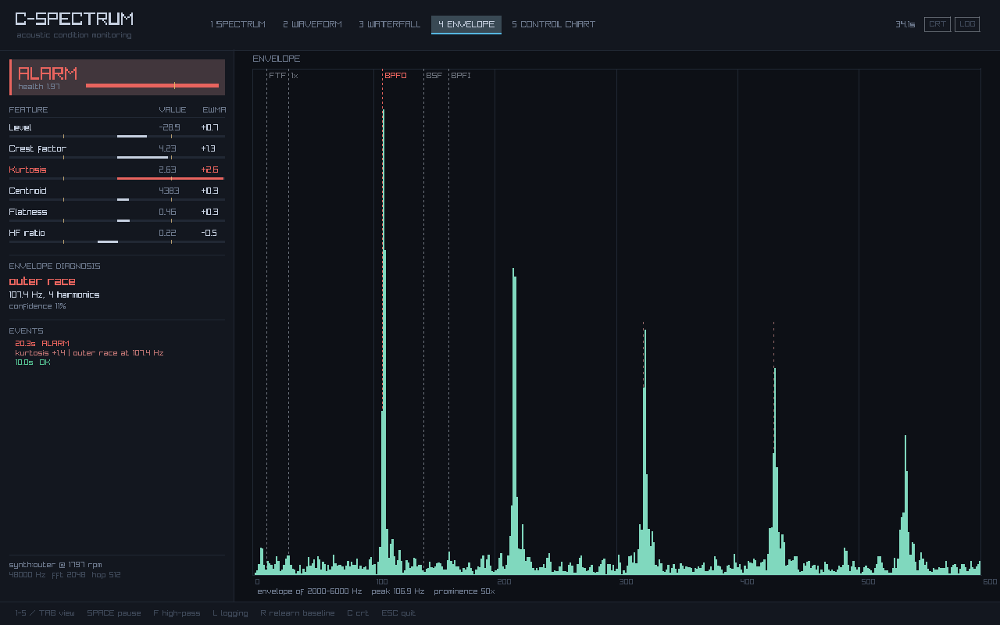
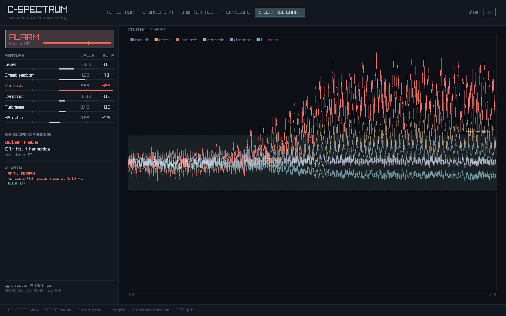
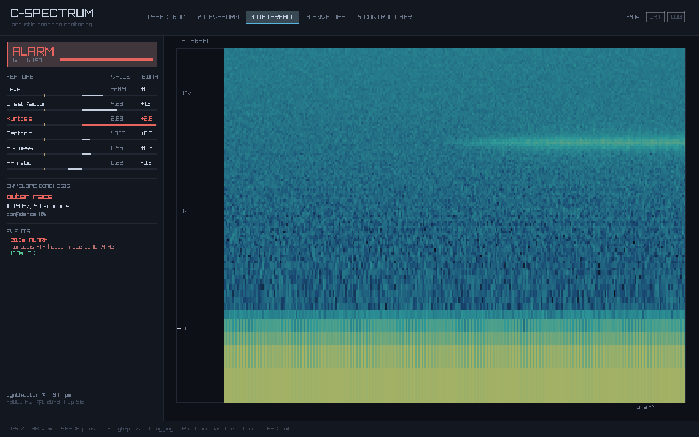

State
—
Hears a bearing starting to fail.
A condition monitoring tool in C11. It listens to a machine, learns what it normally sounds like, and raises an alarm when that changes — then works out which part of the bearing is producing the noise.
Every number below came out of the C program. The runs were exported with
--json and this page just replays them. Pick a machine and press play.
The same analysis, compiled to WebAssembly and pointed at your microphone. Hold it near a fan, a washing machine, a drill, or just tap the desk, and it tells you whether it sounds smooth and how fast anything is knocking. Drop in an audio file if you'd rather.
It is the C code in this repository compiled with emscripten, not a JavaScript rewrite, so there is one implementation of the DSP and not two that quietly disagree.
When a rolling element passes over a damaged spot it produces a very short impact. The impact is broadband, and it rings the bearing housing at its structural resonance — usually a few kHz. Then the next ball arrives and does it again.
So there are two problems. The energy is tiny compared to the shaft, the motor and the room, so the overall level barely moves until the damage is severe. And the number you actually want — how often the impacts repeat, which is what identifies the broken part — isn't present in the signal as a frequency at all. It's amplitude modulation on a much higher carrier.
C-Spectrum solves the first with statistics on features that respond to shape rather than loudness, and the second with envelope demodulation.
Every 512 samples the signal is reduced to six numbers. They're chosen because they fail differently, so the pattern of which ones move says something about what kind of fault it is.
| Feature | Measures | Responds to |
|---|---|---|
| Level | overall RMS in dB | almost anything, but late |
| Crest factor | peak / RMS | impacts, long before the level moves |
| Kurtosis | how spiky the signal is | impacts |
| Centroid | where the energy sits | wear |
| Flatness | tonal vs broadband | rubs, cavitation |
| HF ratio | energy above ¼ Nyquist | friction, impacts |
Each one is learned for ten seconds, then frozen and tracked on an EWMA control chart. Freezing matters: the obvious mistake is to keep updating the baseline forever, because then a developing fault gradually teaches the detector that the fault is normal and the alarm quietly clears itself while the machine keeps failing.
Bandpass the resonance, rectify, low-pass, decimate, then FFT what's left. Rectifying folds the modulation back down to baseband, so the impact repetition rate reappears as a peak with a series of harmonics.
That rate is then matched against the frequencies computed from the bearing's geometry — number of balls, ball and pitch diameter, contact angle, shaft speed. For a 6205 at 1797 rpm those are BPFO 107.4 Hz and BPFI 162.2 Hz, which is what the comb in the picture lines up with.
Three gates before it will name anything: the envelope has to look genuinely periodic (peak/median ≥ 8, versus about 3 for a healthy machine), at least two harmonics have to stand out, and the match has to account for a real share of the band. Without them, four candidates and enough time will eventually find a convincing pattern in noise.



Left: the control chart the alarm decision comes from — kurtosis in
red leaving the band while the rest stay inside. Right: the waterfall,
where you can watch the housing resonance light up as the fault develops.
Both screenshots are generated by the program itself with
--capture, so they can't drift out of date.
There's a machine simulator built in, with real fault physics — impulse trains through a resonator, load-zone modulation on inner race faults, and a bit of slip on the impact timing. It exists so the detector can be tested against a known answer.
git clone https://github.com/arkid-lutaj/c-spectrum
cd c-spectrum
cmake -B build -DCMAKE_BUILD_TYPE=Release
cmake --build build
./build/cspectrum --analyse --synth outer --rpm 1797 final state ALARM
alarms 1
first alarm 20.3 s
feature mean sigma final ewma
rms_db -31.0945 2.3247 -29.1988 +0.84
crest 3.4647 0.5428 2.7549 +0.92
kurtosis 2.5671 0.2765 2.7031 +3.44 <-- tripped
centroid 3208.9250 816.6946 3277.5757 +0.07
flatness 0.3882 0.0495 0.3850 -0.05
hf_ratio 0.1991 0.0517 0.1622 -0.65
envelope analysis (2000-6000 Hz band)
verdict outer race at 107.4 Hz
harmonics 4
Drop --analyse for the window. --wav file.wav to
analyse a recording, --mic to listen live.
| Fixed-hop analysis | One FFT per 512 samples, never per rendered frame. Otherwise every statistic downstream silently depends on the frame rate. |
| Lock-free ring buffer | C11 atomics with release/acquire, cache-line padded. volatile
is not enough — it emits no barrier, so it works on x86 and
races on ARM. |
| Filters designed at runtime | From (cutoff, sample rate, Q), in double precision. Hardcoded coefficients silently mean a different cutoff at a different sample rate. |
| Frozen baseline | With optional slow adaptation that pauses whenever the state isn't OK, so a fault can never be learned as normal. |
| 33 tests | Against values known from theory: √2 for the crest factor of a sine, −3.01 dB at a cutoff measured five ways, 107.36 Hz for a 6205. Plus zero false alarms over ten simulated minutes. |
| No GUI dependency | The core, CLI and tests build with -DCSPECTRUM_GUI=OFF
— no display, no raylib. That's what CI runs on four
compilers. |
A microphone in air is a worse sensor than an accelerometer bolted to a bearing housing: it hears the whole room and can't see much below a few tens of Hz. The signal processing is identical either way and everything here works on an accelerometer stream, but the sensor is the compromise.
The numbers on this page come from the built-in simulator, not from a real failing bearing. It models the physics rather than faking the output, which is what makes it useful for testing — but it is a simulation, and that's worth saying plainly.
There's no order tracking, so it assumes roughly constant shaft speed. The envelope band is set by hand rather than found automatically. It tells you a fault is present, not how long the bearing has left.